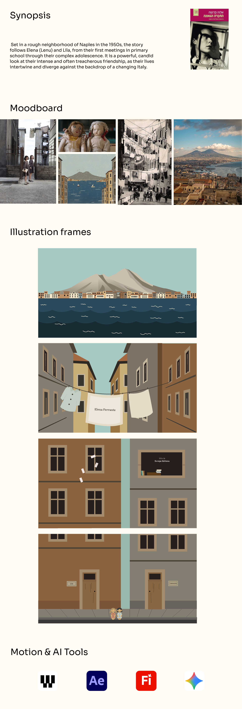

An animated book opening for Elena Ferrante's My Brilliant Friend. The project was developed from original styleframes created in Adobe Illustrator and animated using AI tools integrated with After Effects.

Translating the nostalgic atmosphere of Elena Ferrante's story into a motion sequence capturing the narrative as an emotional memory told through Lenu's eyes.
An illustrative sequence created in Adobe Illustrator and animated with AI and After Effects. The soft vector style captures the dreamlike, memory-bound quality of Lenu's childhood in Naples.